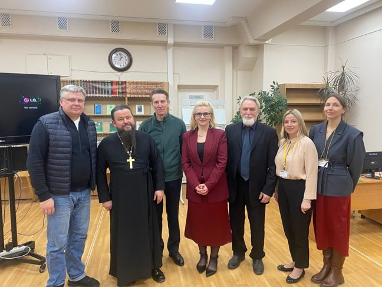
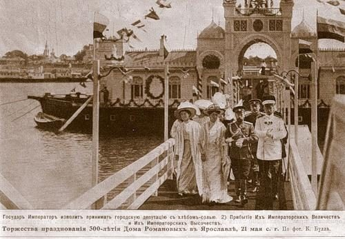

Сегодня Ярославское региональное отделение Международной общественной организации «Императорское Православное Палестинское Общество» (ИППО) продолжает активную работу в регионе, последовательно развивая исторические традиции духовного просвещения, науки и милосердия, заложенные более века назад.
С 2025 года отделение возглавляет Директор ГАУК ЯО «Ярославская областная универсальная научная библиотека имени Н. А. Некрасова» Наталья Алексеевна Березина.
Деятельность отделения реализуется по трем ключевым уставным направлениям:

21 мая 1882 года для установления связей с регионом, где пребывал Иисус Христос, для изучения земли Обетованной и паломничества в этот край было организовано Православное Палестинское общество, получившее в 1889 году почетное наименование «Императорское» (ИППО). Для изучения вопросов истории Обетованной земли Общество стало издавать Православный Палестинский сборник. В разное время во всех губерниях Российской империи были организованы Отделы Общества. К 1914 году такие Отделы, возглавляемые архиепископами, существовали в 52 епархиях Русской Православной Церкви. Они объединяли около трех тысяч членов.
В Ярославской губернии Отдел ИППО был открыт 10 апреля 1894 года под председательством архиепископа Ярославского и Ростовского Ионафана. Товарищем Председателя (его заместителем) стал ярославский вице-губернатор. Текущую деятельность Отдела ИППО вели казначей и делопроизводитель. Отдел вел большую просветительскую работу, используя для этих целей Ярославские Епархиальные ведомости и публичные выступления. По благословению Святейшего Синода Общество организовывало сбор средств для православных в Иерусалиме и Святой Земле. Сбор совершался в праздник Входа Господня в Иерусалим (в период Великого поста за неделю Пасхи) и имел строго организованный порядок, для чего в 1895 году Обществом были разработаны «Руководящие правила для действия Отделов и Уполномоченных». Как и в других губерниях, подготовка к кружечному сбору денег в церквах начиналась с публикации Воззвания в Ярославских Епархиальных ведомостях. Духовная Консистория полученные от ИППО пакеты с текстом воззваний, собеседованиями, объявлениями, а также с надписями для сборных блюд и бланками актов по сбору доставляла во все церкви епархии.
Так, в 1903 году указанные бумаги были отправлены в Ярославскую епархию в пяти ящиках, содержавших 1050 пакетов по числу церквей епархии. Листы с воззваниями и собеседованиями раздавались бесплатно грамотным прихожанам при входе в церковь членами причта, а священник читал проповедь. Сбор средств в церкви производился посредством обхода с блюдом во время всех богослужений праздника Входа Господня в Иерусалим. Сбор осуществлял один из священников или церковный староста, или кто-либо из почетных прихожан. По окончании богослужения немедленно составлялся акт о собранных деньгах в присутствии священника, старосты и нескольких почетных прихожан. Собранные от приходов средства передавались благочинному церковного округа, от него в епархиальную консисторию, которая отсылала деньги в Совет Императорского Православного Палестинского общества. Размещался Совет в С.- Петербурге в доме 36 по Вознесенскому проезду.
В первый год своей деятельности Ярославский Отдел ИППО собрал сумму в 2696 руб. 28 коп. Из них от церковных приходов и Архиерейского дома поступило 2406 руб. 62 коп., от монастырей епархии 289 руб. 66 коп. Архиепископу Ярославскому и Ростовскому Ионафану было направлено председателем ИППО письмо следующего содержания: «Высокопреосвященнейший Владыко, ознакомившись из представленного Мне Советом Императорского Православного Палестинского Общества отчета о деятельности состоящего под председательством Вашим Ярославского Отдела Общества, считаю приятным для Себя долгом выразить Вам и всем сотрудникам Вашим по Отделу Мою искреннюю благодарность за Ваши труды и теплое содействие, оказанное Отделом к развитию деятельности Общества».
В 1903 году наибольший сбор представил в Ярославскую консисторию благочинный 2-го округа Рыбинского уезда, настоятель городской Покровской церкви протоиерей Иоанн Долинский. Сбор каждой из 28 церквей благочиния составил от 1руб. 20 коп. до 23 руб. 20 коп., а всего 172 руб. 60 коп. Четверо благочинных города Ярославля передали в консисторию 320 руб. 91 коп. 15 мужских и 10 женских монастырей Ярославской епархии собрали в общей сложности 194 руб. 96 коп. В целом, в 1903 году, денежный сбор по епархии составил 2855 руб. 30 коп. Благочинные церковных округов и настоятели монастырей вместе с собранными средствами направляли в Ярославскую Духовную Консисторию рапорты. Одним из наиболее подробных отчетов был рапорт настоятельницы Ярославского Казанского женского монастыря игумении Митрофании: «Собранные за Богослужениями по церкви деньги в праздник Входа Господня в Иерусалим на облегчение путешествия паломников и поддержания православия в Святой земле 29 р. 44 к. и жертвуемыя от Настоятельницы монастыря 5 р., всего 34 рубля 44 копейки при сем вместе с актом в Духовную Консисторию имею честь препроводить. А деньги, собранныя в монастырской кладбищенской церкви на этот же предмет (5р.15 к.), представлены священником Димитрием Давыдовским на имя благочинного священника Константина Ушакова (Духовской протоиерей)».
В 1905 году, из числа собранных в Ярославской епархии средств, в Петербург в адрес Совета Общества было передано 1150 рублей. Отдел Общества на свои мероприятия израсходовал 300 руб., при этом в кассе Ярославского Отдела к 1 марта (начало отчетного Палестинского года) осталось 888 руб. 34 коп. В Отделе тогда состояли 98 человек, в том числе 4 почетных члена, 21 человек – действительных и 73 члена-сотрудника.
Особенно активной была деятельность Ярославского Отдела ИППО в год своего 20- летия. В 1913-14 отчетном году Ярославский Отдел, «находясь под покровительством и председательством Высокопреосвященнейшаго Тихона, архиепископа Ярославского и Ростовского, имел в своем составе товарища Председателя г. Ярославского Вице Губернатора, Его превосходительство Владимира Павловича Кисловского; казначея – протодиакона Ярославского кафедрального собора Петра Лукича Ракобольского; кандидата казначея (он же и делопроизводитель), священника Димитрия Ипполитовича Давыдовского; уполномоченного от Общества по продаже паломнических книжек в святую землю Палестины г. инспектора Ярославской мужской гимназии Владимира Алексеевича Андроникова». Всех членов Отдела, по состоянию на 1 марта, за исключением сотрудников, насчитывалось 32 человека, из них 1 почетный и 8 пожизненных. За смертию выбыли из Общества игумен Антоний, игумен Макарий, игумения Гавриила и ярославский купец Михаил Константинович Огнянов. На общем собрании Отдела, состоявшемся 7 апреля в день Вербного Воскресения, в звание Пожизненного члена ИППО был избран ярославский потомственный почетный гражданин Александр Георгиевич Лопатин, вступивший в число членов общества еще в 1895 году. Со времени основания Ярославского отдела находился в рядах ИППО вновь избранный казначеем и делопроизводителем Отдела вышеупомянутый священник Ярославского Казанского монастыря кладбищенской церкви Димитрий Ипполитович Давыдовский. Он также был произведен «за многолетние усердные труды на пользу Общества в Пожизненные действительные члены Общества с выдачею Высочайше утвержденного серебряного в золотой оправе знака – креста на голубой ленте для ношения на шее».
В отчете Ярославского Отдела отдельно отмечалось, что «со времени своего открытия, то есть за 20-летний период своего существования Отдел собрал и препроводил в Совет Общества наличными деньгами 34 228 руб. 47 коп.».
Не менее усердно Ярославский Отдел вел и просветительную работу. Кроме храмов, местом для чтений служили школьные помещения и другие здания «где и самыя лекции сопровождались, применительно к содержанию, световыми картинами и церковными песнопениями, через что сообщаемые сведения производили на слушателей сильное и глубокое впечатление».
31 марта, в 300-летний юбилей Царствующего Дома Романовых, и 22 декабря 1913 года Ярославским Отделом были устроены Палестинские концерты в помещении Общества любителей музыкального и драматического искусств с участием хора Архиерейских певчих под управлением священника В.Н. Зиновьева и местных любителей музыки и сольного пения. Лекция и хоровое пение составили первое отделение концерта. Второе отделение открылось исполнением пьесы М.И. Глинки «Молитва», стихами М.Ю. Лермонтова, впервые оркестрованными для юбилейного вечера местным композитором Ф.Э. Фурман.
Вечер почтили своим присутствием Высокопреосвященнейший Тихон, архиепископ Ярославский и Ростовский – председатель Отдела, преосвященный Сильвестр, епископ Рыбинский, господин Начальник губернии граф Д.Н. Татищев с супругою и другие высокопоставленные лица. Отмечалось, что прошедший вечер оставил очень хорошее впечатление и, за вычетом расходов по организации концерта, привлек в кассу Ярославского Отдела ИППО 150 рублей 15 копеек.
Императорское Православное Палестинское Общество с началом Советской власти продолжало существовать, но его название утратило слова «императорское» и «православное». Российское Палестинское Общество в период 1918-1941 годов объединяло ученых историков и востоковедов. Его членами были академики Н.И. Вавилов, В.И. Вернадский, А.Е. Ферсман. С окончанием Великой Отечественной войны деятельность Палестинского общества возобновилась. В 1954 году вышел очередной выпуск «Палестинского сборника».
В 1992 году Общество восстановило утраченную связь с Русской Православной Церковью. Патриарх Московский и всея Руси Алексий II возглавил его Комитет Почетных членов. Решением Верховного Совета РФ Обществу было возвращено наименование Императорского. В настоящее время в России действуют 55 региональных отделений Общества и 27 зарубежных представительств. ИППО входит в Экономический и Социальный Совет ООН.
В 2026 году готовится к выпуску 125-й номер «Палестинского сборника».
В настоящее время отделение Императорского Православного Палестинского Общества продолжает свою активную деятельность и в Ярославской области. С 2017 год по 2025 год Ярославское отделение возглавлял профессор кафедры экономической теории и менеджмента Ярославского государственного педагогического университета имени К.Д. Ушинского, доктор экономических наук А.Е. Кальсин. В это период общество занималось, в основном, просветительской деятельностью, организуя лекции для студентов.
С 2025 года отделение возглавляет Наталья Алексеевна Березина, директор ГАУК ЯО «Областная библиотека имени Н.А. Некрасова», сопредседателем избран Сергеев Анатолий Федорович, кандидат экономических наук, профессор, сопредседатель Ярославского отделения общероссийской общественной организации «Деловая Россия», член-корреспондент Российской Академии экономических наук и предпринимательской деятельности, доцент Российского государственного университета нефти и газа им. Губкина, заместителем председателя является Крутова Яна Валерьевна.